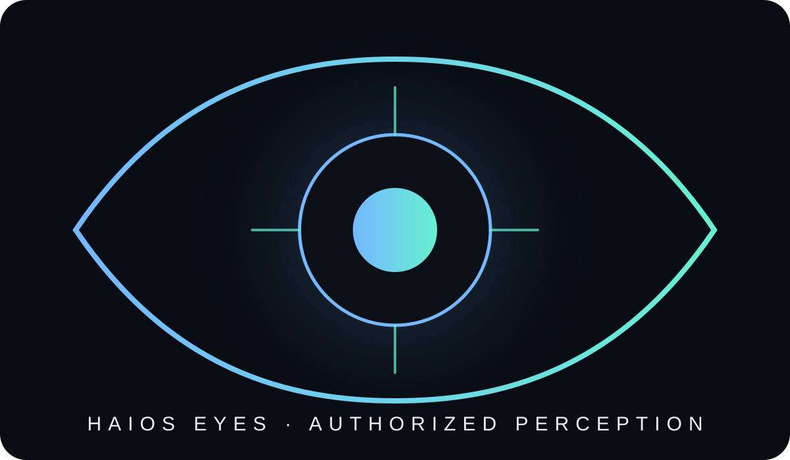

Ojos para ver.
Permiso para actuar.
Evidencia para demostrar.
HAIOS EYES + Personal Operator es la arquitectura candidata de percepción y trabajo delegado de HAIOS. El dueño conserva la autoridad: el sistema solo puede observar o actuar dentro de permisos explícitos, revocables y auditables.

Un operador digital con fronteras visibles
Cloud + Browser
Investigación, lectura y trabajo web dentro de servicios, pestañas y dominios expresamente autorizados. Sin instalación no significa acceso al dispositivo.
Desktop + Mobile
El acceso a archivos, aplicaciones o funciones móviles requiere un agente/app y permisos explícitos compatibles con la plataforma. No existe acceso oculto por defecto.
Alcance mínimo
Dispositivo, aplicación, dominio, carpeta, operación, dato, duración, misión y revocación.
Privacidad por arquitectura
Minimización, zonas protegidas y procesamiento efímero cuando corresponda. Observar no equivale a ejecutar.
Trabajo demostrable
Las capacidades futuras deberán registrar estado, pruebas y evidencia suficiente. Un hash aporta integridad; no prueba por sí solo autoría, legalidad ni verdad.
Ciclo operativo verificable
PARED ≠ FIN: una dependencia externa se registra como MATERIAL_DEPENDENCY y el trabajo independiente puede continuar sin fingir que la dependencia fue resuelta.
Equipo multiagente candidato
Planner + Research
Descomposición de objetivos, investigación y procedencia.
Security + Privacy
Límites, amenazas, minimización y bloqueo fuera de alcance.
Verification + Audit
Intentar refutar resultados y comprobar la evidencia antes de promover estados.
Estado del sistema
Arquitectura federada
Cada entrada de país es únicamente un diseño ilustrativo E0 hasta que exista evidencia específica. La capa global coordina snapshots, evidencia y reconciliación; no sustituye autoridades locales ni convierte consenso multimodelo en evidencia.
| País | Marca país | Runtime | Evidencia | Activos de marca |
|---|
Reglas públicas de confianza
Frontend sin autoridad
La interfaz no puede convertir un diseño o demo en verified, operational, connected o production.
NO espionaje
No vigilancia oculta, no acceso global presumido y no uso de cuentas o dispositivos fuera del permiso del propietario.
Disenso preservado
Conflictos de versión, hash, evidencia, jurisdicción o marca permanecen abiertos hasta reconciliación y revisión humana.
Qué todavía no afirmamos
No afirmamos que PocketBase V7.2 esté ejecutándose públicamente, que V8 esté habilitado, que HAIOS EYES controle dispositivos en producción, que exista ejecución financiera automática, que una auditoría legal o de seguridad externa haya sido aprobada ni que los activos de Marca País tengan derechos de uso aprobados. Esos estados solo podrán promocionarse con evidencia verificable.